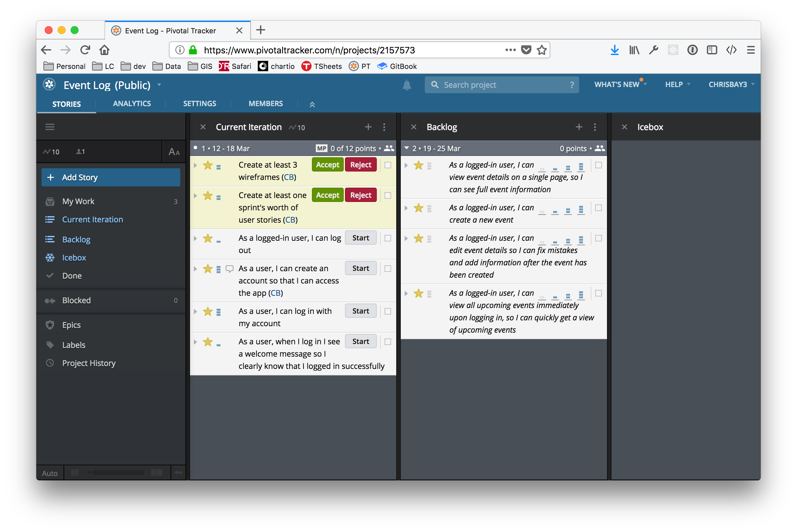
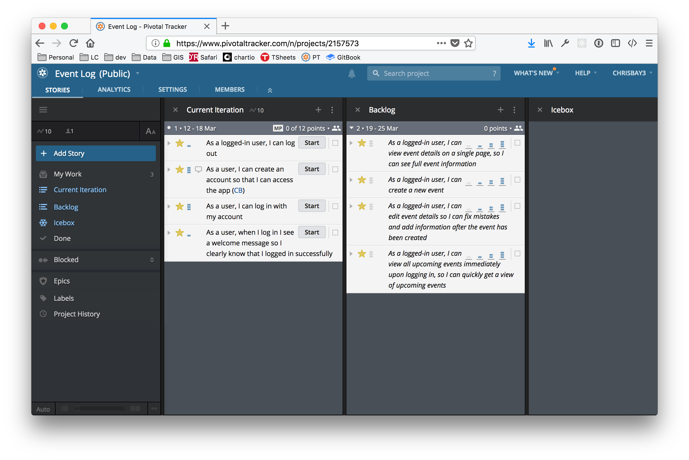

Demo Project: Event Log
Quick Links
- Assignment Repository for Event Log
- Event Log GitHub Repository
- Pivotal Tracker Project
- Jump to week: 1 | 2 | 3 | 4 | 5 | 6 | 7 | 8
Overview
For his Liftoff project, Chris has decided to work on an application movitivated by a need expressed by a nonprofit organization. This page will outline the steps that he follows in developing his project, completing each of the Liftoff assignments along with completing user stories and participating in the weekly agile ceremonies like stand-ups and project kickoffs.
Week 1
Sprint 1 Kickoff
Most sprint kickoffs will consist of planning estimating, and committing to user stories to complete during the sprint. Since there are not user stories created yet (we'll do that in week 2) this kickoff is a litle different.
We discussed our project ideas--Chris' for an event log and Paul's for an expense tracker--and got some feedback on how big each project might be to be doable. We also discussed the particular technologies that we'll be using to build our projects.
Finally, we discussed the things that we expect to have to learn along the way, beyond what we already know. Paul will be using a new-to-him framework called Rocket (for the Rust programming language), while Chris has some unknowns around how user authentication will work. He also wants to use test-driven development which he hasn't done in Spring and will have to learn about.
Assignment: Project Outline
The project outline for Event Log gives an overview of the desired functionality.
Week 2
Sprint 1 Standup
During our sprint 1 standup, we discussed our completed project outlines and upcoming work. Here are Chris' items.
What was accomplished: The Event Log project outline was completed, with a few features laid out. Some questions were raised about how to approach different things (e.g. user login) that we'll have to be figured out along the way.
What is planned next: Next, wireframes and initial user stories will be developed.
Blockers: There aren't any significant blockers, though there are some unknowns that were made clear as part of this early planning. In particular, Chris has done some research around using Spring Security framework to handle user authentication, though that seems like a potential challenge.
Assignment: Project Planning
The Project Planning includes 3 initial wireframes for the Event Log app, along with a link to the Pivotal Tracker project that has been populated with some user stories.
Here's a screenshot of the tracker with initial user stories.

Week 3
Sprint 1 Review and Retrospective
For the spring review/retro Chris and Paul discussed the work completed during the first. Both completed initial project planning and setup. Working through some details such as wireframes and user stories helped clarify the initial work to be done, which will begin in earnest this week as the second sprint kicks off.
During the retrospective portion of the discussion, the discussed how in some ways it didn't feel like much had gotten done since there wasn't much, if any, code written. Paul made the point that while little code was written, the planning that was done should help the initial coding phase of the project go more quickly than it otherwise would. He noted that if a programmer just jumps into a project without designing and planning the work to be done, a lot of time can be wasted in doing things inefficiently, reworking portions of the app, and generally figuring out how it should be structured. Doing this work up front should make things go more smoothly from now on!
Assignment: Project Setup
Assignment submission in liftoff-assignments
The project's GitHub repository was set up. Initial commits created a basic "Hello world" Spring Boot app obtained via start.spring.io. They also add some basic dependencies in the build.gradle file for jQuery and Bootstrap (from the org.webjars group, as well as a testing database engine, H2.

Sprint 2 Kickoff
For the second sprint, Chris plans on working through the initial user stories, which are each focused on one aspect of user registration and authentication. He has reviewed the spring-filter-based-auth example provided by LaunchCode, and may use that approach. However, he has been learning about Spring Security and wants to see if he can use that framework for setting up registration and login.
He hasn't used Spring Security before, and it looks like it could be complicated to set up. To get started, he's going to refer to the Spring Security Series of articles at baeldung.com, which seem well-written and thorough. The only challange may be in modifying the complex examples for his more straightforward situation.
He has estimated the user stories that he feels confident he can complete this sprint, and moved them into the Current Iteration column of Pivotal Tracker.

The first story he'll work on will be, "As a user, I can create an account so that I can access the app." The other stories are focused on logging in and out, and one can't log in or out without and existing account, so it makes sense to start this one first. To verify that account registration works, he'll be able to check the database.
Setting up account registration will require him to set up his first model class, User, as well as setting up the app's database. Some other initial, one-time work--such as creating some shared template fragments--will also need to be done.
If he completes all of these, there are more stories ready to estimate and begin in the Backlog.
Week 4
Since there wasn't a Project Module assignment for week 4, the focus was on completing user stories and gaining momentum.
Sprint 2 Standup
What was accomplished: All of the user registration and login stories are complete! (See associated commits and screenshots below.) Chris didn't expect to get as much done, but he was able to get all of the desired features implemented, including the associated tests (recall that he's using the test-driven develpment practice).

View the codebase for event-log as of the end of sprint 2.
Screenshots:
{kind=link}
{kind=link}
{kind=link}
{kind=link}
What is planned next: Next, Chris will work on building out the event model classes, along with associated controllers and views. He has estimated a few stories and moved them into the Current Iteration column (see Pivotal Tracker screenshot below). Right now, they seem like a lot of work to complete with only one week left in the sprint, but he's going to get as much done as he can.

Blockers: At this point, there are no blockers. The tasks ahead are much like the tasks to create Cheese objects used in CheeseMVC, so there are no obvious rough spots ahead for the current tasks.